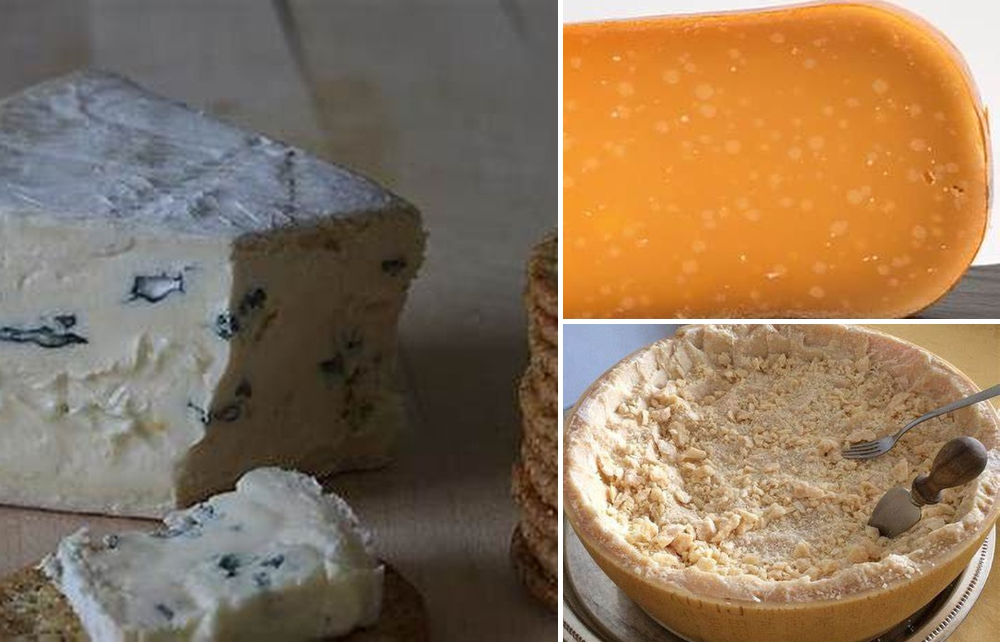
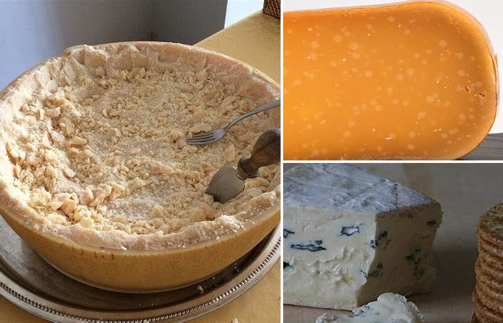
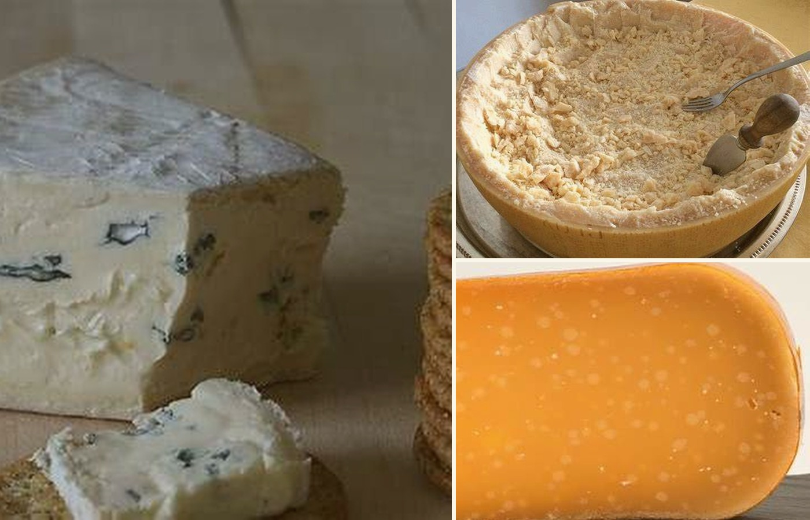

Sobre nosotros
Una tienda pensada para acercar quesos artesanales, historias de origen y buenos momentos a tu mesa.
Queso & Sabor
Somos un emprendimiento dedicado a la selección y venta de quesos artesanales. Buscamos reunir productos con identidad, elaborados con cuidado y pensados para personas que disfrutan descubrir nuevos sabores.
Queremos que elegir un queso sea simple, cercano y entretenido, ya sea para una tabla, una receta o un regalo.


Una idea que comenzó alrededor de una mesa
Queso & Sabor nace de la intención de reunir en un solo lugar productos artesanales que normalmente se encuentran de manera dispersa. Con el tiempo, la idea creció hacia una tienda donde el origen, el proceso y la experiencia de compra fueran igual de importantes.
Calidad, cercanía y producción artesanal
Nos comprometemos a comunicar de forma clara las características de cada producto y a valorar el trabajo de quienes los elaboran.
- ✓Calidad y cuidado en la selección.
- ✓Producción artesanal e ingredientes seleccionados.
- ✓Apoyo y visibilidad a pequeños productores.

Nuestras redes sociales
Síguenos para conocer nuevos productos, recetas e ideas para tus tablas.